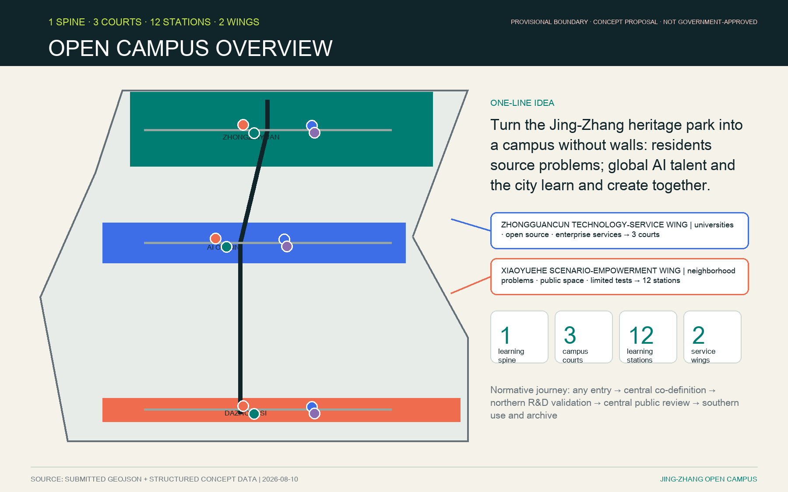
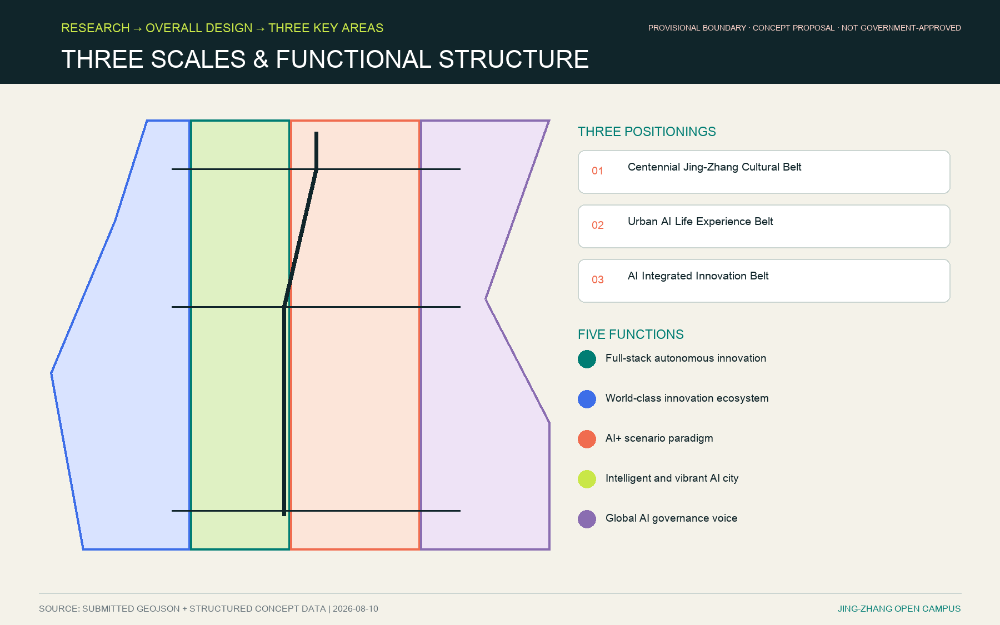
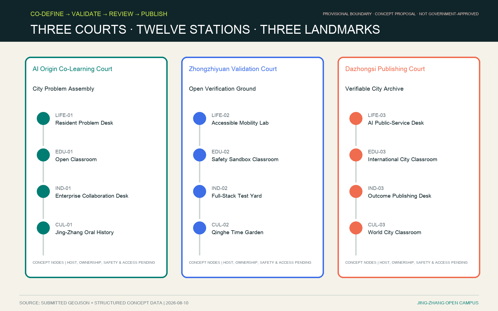
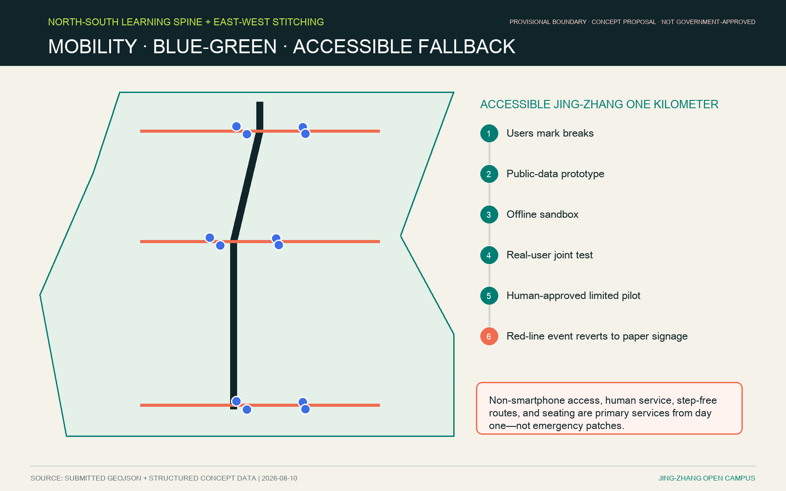
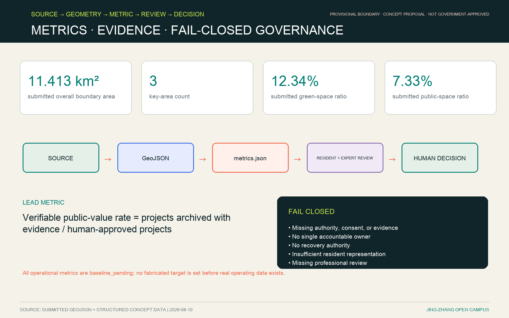

Offline and online civic problem intake
One spatial and governance journey
Any entry→Central co-definition→Northern R&D validation→Central public review→Southern use & archive→
Open City Semester12-week co-creation + 20-week stewarded pilot + 8-week evaluation and closure
Residents source problems; global AI talent, universities, enterprises, and residents form teams.
Overview Map


Three Scopes · Land-Use Zones · Two Wings Connect Three Courts and Twelve Stations
Zhongguancun Technology-Service Wing
University, open-source, and enterprise services connect to all three courts; this is a service relationship, not a new boundary.
Xiaoyuehe Scenario-Empowerment Wing
Neighborhood problems, public space, and limited tests connect to all twelve stations; exact location awaits official data.
Buildings and Renewal Projects
Retain first: reuse ground floors, courtyards, park thresholds, and existing service spaces. Parcel intervention, intensity, ownership, fire, and utilities await professional confirmation.
- JZ-01 Accessibility stitching
- JZ-02 Qinghe interface
- JZ-03 Co-learning street
- JZ-04 Four-quadrant walking
- JZ-05 Governed AI nodes
- JZ-06 Semester route
12 Learning Stations
Co-test a one-kilometer accessible route
Human-takeover health and government navigation
AI basics, problem framing, and public value
Data ethics, red-teaming, and rollback drills
Cross-cultural teams and method exchange
Mutual matching of public problems and tools
Reproducible, auditable, stoppable validation
Publish reviewed outcomes and negative results
Resident-historian verified timelines
Public narrative of railway, river, and technology
Archive global cases, failures, and methods

Key Areas and AI Scenarios · 12 Scenario Cards
- SC-01 Resident Problem Co-Definition L0
- SC-02 Accessible Jing-Zhang One Kilometer L1
- SC-03 AI Public-Service Navigation L2
- SC-04 Open AI Literacy L0
- SC-05 AI Safety Sandbox L2
- SC-06 International City Methods Studio L0
- SC-07 Enterprise Service Copilot L2
- SC-08 Reproducible Full-Stack Validation L2
- SC-09 Verifiable Outcome Publishing L1
- SC-10 Jing-Zhang Oral-History Co-Creation L2
- SC-11 Low-Speed Robot Coexistence Test L3
- SC-12 Open City Semester Public Route L1
Mobility, Blue-Green Public Space, and Accessible Fallback

Quadruple-Helix Governance
Government
Public data, field approval, emergency stop and recovery
Community
Problem framing, resident materials, public review, exit rights
Universities
Methods, experiment logs, academic integrity
Enterprises
Sandbox tools, pre-existing IP, product safety
6A Asset-Level Accountability
Resident problems and materials
A: Community
R: Station problem desk
Recovery: community lead
Methods and experiment records
A: University
R: Research team
Recovery: university project lead
Tools and product safety
A: Enterprise
R: Engineering and safety team
Recovery: product-safety lead
Public data and field pilot
A: Government / competent public institution
R: Authorized data / field team
Recovery: original approving body
The full eight-asset matrix, backups, stop authority, and escalation paths are in governance-state-machine.json. Roles are not committed and require named authorization before field use.

Core Metrics and Evidence
11,412,825.386 m²provisional geometry12.3423%submitted design geometry7.3281%submitted public-space geometry
52-Week Operation
1‑4 → 5‑8 → 9‑20 → 21‑24 → 25‑44 → 45‑52
Self-Check Status: Fail Closed
No authority, evidence, consent, accountable owner, recovery path, or professional review means no field pilot.
Task Coverage · Sources · Assumptions · Self-Check Status
Task Coverage
Announcement 1.3, 1.4, 1.5 and agent.1-agent.6 map to prose, layers, drawings, and matrices.
Sources
sources.json · data/source_registry.json · standard_matrix.json
Assumptions
Provisional geometry, controls, ownership, utilities, hosts, budgets, and real-user tests remain pending.
Self-Check Status
Machine validation is not government approval; precision-sensitive claims still require professional confirmation.